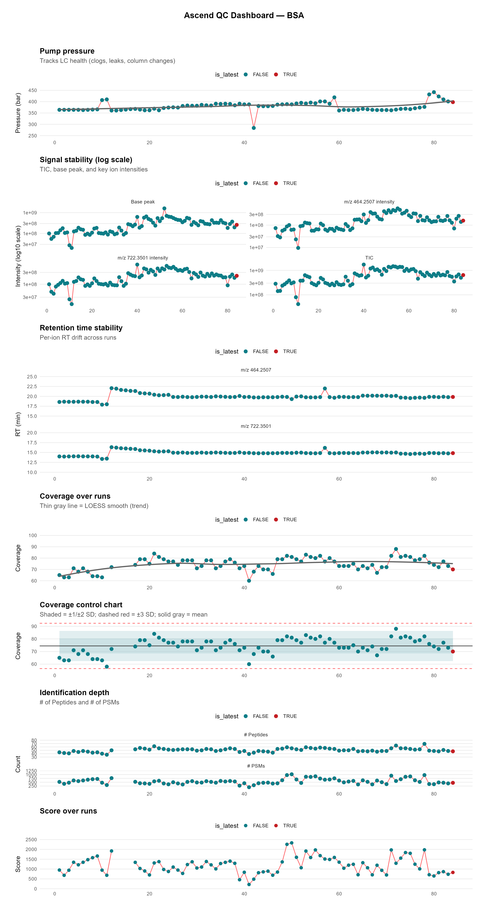

Ascend – QC Dashboard
← Back to instrument list
2026‑03‑15
Latest TIC LC Chromatogram
Latest Base Peak Chromatogram
Latest MS2 Chromatogram
Latest Pump Pressure Tracing
Instrument Timecourse
Download full QC report (PDF)

2026‑03‑08